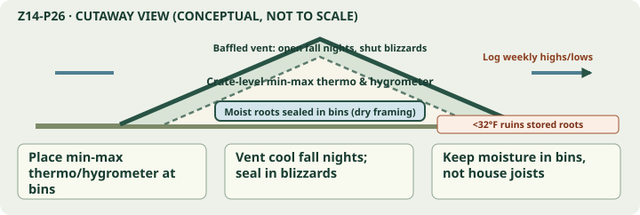

Z14-P26 · Food production and preservation · New manuscript
Monitor root-cellar temperature and humidity objectively rather than guessing
Catch silent freeze plunges, warm-spell spikes, and dry-air shriveling before weeks of stored food spoil.
When it applies · Traditional root cellars, unheated basement cold rooms, crawlspaces, and insulated porch boxes.
Equipment · Digital min-max thermometer/hygrometer placed at crate height, written weekly log, and adjustable intake/exhaust vent.

Actions
- Hang a simple digital min-max thermometer and hygrometer RIGHT AT CRATE LEVEL (floor air is colder and ceiling air warmer by 5–10°F) and log high/low readings weekly through autumn, mid-winter sub-zero cold snaps, and spring thaws.[P05]
- Manage passive cellar ventilation intentionally: open cool night intake vents in mild autumn to pull in crisp air and drop cellar heat, then close vents tightly during minus 20°F Minnesota blizzards so frost never freezes stored roots solid.[P05, U10]
- Raise local humidity cleanly around moist-zone root bins using damp sand/sawdust or perforated plastic bin liners rather than soaking wooden basement joists where structural house mold can grow.[P05]
Failure recognition · Assuming an unmonitored attached garage stays "cool" during a January cold snap until 100 pounds of carrots and potatoes freeze rock-solid overnight.[P05]
Verify · Confirm min-max thermometer sits at crate level, weekly log tracks freeze/warm drift, and vent/insulation adjustments match outdoor weather.[P05]
Stop or change course · Sustained temperatures below 32°F (freeze damage) or above 55–60°F (fast sprouting/rot) require relocating or preserving remaining produce promptly.[P05]
Evidence and editorial notes
- P05 · University of Minnesota Extension · Harvesting and Storing Home Garden Vegetables (current web edition)
- Section: Root-Cellar and Cold-Storage Temperature/Humidity Zones · Conditions: Basements, root cellars, unheated porches, and insulated cold bins
Support: Match stored produce to distinct storage regimes: cold-moist (32–40°F, high humidity for carrots/beets/cabbage), cool-moist (45–50°F for potatoes), cold-dry (32–35°F dry for onions/garlic), and cool-dry (50–55°F dry for winter squash); separate ethylene-producing apples from sensitive vegetables.
Limitations: Storing potatoes below 40°F converts starch to sugar; freezing temperatures ruin unhardened stored roots. · Conflicting evidence: None; prevents treating one basement temperature as universal for all crops.
Editorial note: Core root-cellar zoning and monitoring evidence in Z14. · Specialist reviewer: Post-harvest horticulture and food storage
Primary source · checked 2026-11-24 - U10 · FEMA / Ready.gov · Winter Weather (current web edition)
- Section: Winter Household Resilience > Frozen Pipes, Ice Dams, and Heating Loss · Conditions: Sub-zero Upper Midwest winter outages and prolonged cold snaps
Support: Prevent burst pipes by insulating exposed lines, keeping cabinet doors open, shutting off and draining water lines per plumbing guidance if indoor temperatures drop toward freezing, and consolidating household occupants into one safe insulated interior room.
Limitations: Draining hydronic boilers or gas water heaters requires exact manufacturer/plumber steps to prevent equipment damage or gas leaks. · Conflicting evidence: None; regionalizes winter home defense for Minnesota conditions.
Editorial note: Anchors winter pipe protection, thermal-zone consolidation, and abandonment thresholds. · Specialist reviewer: Residential plumbing, HVAC, and cold-weather emergency management
Primary source · checked 2026-11-24
Source lineage · UMN Extension Vegetable Storage; new manuscript · Classification · New manuscript.